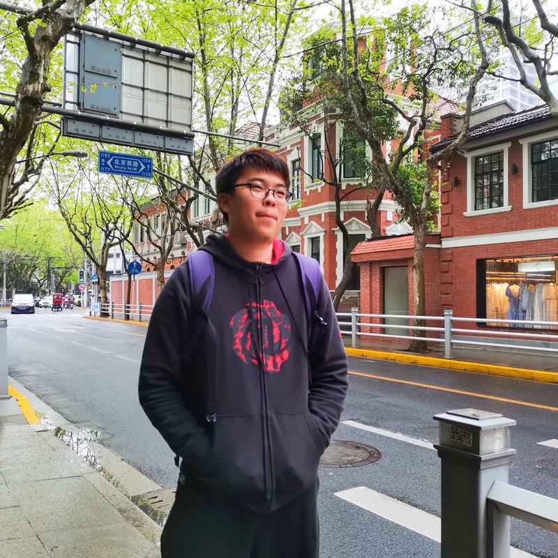

Zooming without Zooming: Region-to-Image Distillation for Fine-Grained Multimodal Perception
Learning fine-grained visual detail through region-to-image distillation.
PhD student at Shanghai Jiao Tong University
I currently work on scalable pre-training and efficient post-training to advance the perceptual and reasoning capabilities of multimodal LLMs.
I am advised by Weiran Huang at SJTU and jointly trained at Zhongguancun Academy with Chenglin Liu. I currently intern with the Base Model Group at Zhipu AI.

Research
Learning fine-grained visual detail through region-to-image distillation.
Evaluating how models ground, apply, and learn new knowledge from multimodal context.
Guiding reinforcement learning with attention supervision tied to visual evidence.
A causal audit of whether visual tool observations actually influence model answers.
Controlling entropy to guide targeted exploration in reinforcement learning.
Unsupervised post-training for continual improvement in multimodal reasoning.
Selecting small, high-quality instruction datasets for multimodal alignment.
Adapting language models to tasks in diabetes care and management.
A rank-based perspective on evaluating large language models.
Background
Apr 2026 — present
Research intern · Base Model Group
Mentor: Zhengxiao Du
Oct 2025 — Apr 2026
Research intern · Machine Intelligence
Mentor: Jun Lan
Jun — Sep 2024
Research intern · WeChat Group
Mentor: Guilin Li
Sep 2024 — present
PhD in Computer Science
Advisor: Weiran Huang
Sep 2024 — present
Joint PhD program
Advisor: Chenglin Liu
Sep 2020 — Jun 2024
Bachelor of Physics
School of Physics and Astronomy
Recognition
Shanghai Jiao Tong University
中国科协青年科技人才培育工程博士生专项计划
Shanghai Jiao Tong University
Shanghai Jiao Tong University
Shanghai Jiao Tong University
Shanghai Jiao Tong University
Shanghai Division
School of Physics and Astronomy, Shanghai Jiao Tong University
Community
Beyond research
I enjoy basketball, football, and badminton. I was captain of my college basketball team and a member of the football team.
Music is another constant: electronic organ (Grade 8) and piano. I also enjoy 2K, FIFA, and Game for Peace.